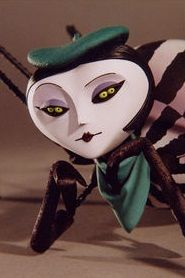

Notes on home and travel.
My first encounter with a nomad was during my stay in Prague. Already, Home was becoming an increasingly vague concept at that moment in my life, but meeting someone who's home was everywhere and nowhere had a profound effect on my young self.
The monthly rent of our beach-side appartment in Tokyo was of about 1.75K$, and transitioning from it, to a sailboat, implicated some serious downsizing. The way we looked at it was that, within 3 years, our 20K$ sailboat would be paid at the rate of 600$ per month. Or that by halving the costs of our current living situation, we could become both "homeowners" while keeping our traveling options open.
To think that, at the time, the harder things to let go of were instruments, old consoles, books and some camera equipment. When the truly hard things to let go of would be the habitual bath, tap water and reliable internet connection.
Surely, I would not do all this for the sake of travel alone, I must have had passions, habits and goals before I left everything to live on a sailboat. I appears from that moment that everything that used to define me was beginning to feel increasingly like distractions, simulations to protect me from truly experiencing anything. I had never let myself feel cold, I had never felt hunger.
The wind rocks the ship sideways, keeping me up at night, but all I can feel is that humbling sense of being present and part of that moment. I have long forgotten about tap water, don't mind the warm water from the plastic jugs, I began to wonder why people even feel the need to take showers every day, and time away from social networks really does make me feel better. I traded the things I thought I cared about, for things I didn't know existed.
Eventually, I got back to building things, I learned how to fix sails, repair a toilet, create electronic systems, maintain an engine — Even to live without power.
We have seen every sunset and almost every sunrise, we have sailed with dolphins, we have climbed mountains on deserted islands, and we have met the most amazing people. When it is our time to go, we will have no regrets, for we were fortunate to have seen more than we could ever hope for.
incoming aesthetics